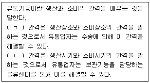
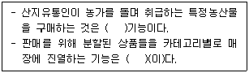
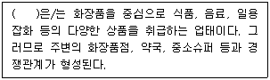
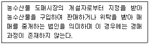
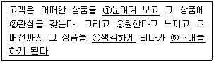
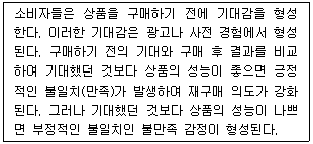
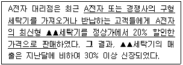
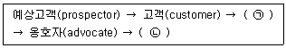
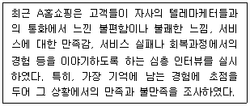

유통관리사-3급 (2016-04-10 기출문제)
1과목: 유통상식
1. 직장이 가지는 의미를 설명한 것으로 가장 옳지 않은 것은?
- 직장은 일하는 곳이며, 가정과 구분되지 않는다.
- 집단생활을 하는 사회적인 장소이다.
- 직장은 사회에 기여하는 장소이다.
- 직장은 배움의 터전이다.
- 직장은 삶을 창조해 나아가는 터전이다.
(정답률: 85%)

2. 「청소년 보호법」제2조에서 정의하고 있는 “청소년 유해약물”에 포함되지 않는 것은?
- '주세법'에 따른 주류
- '담배사업법'에 따른 담배
- '마약류 관리에 관한 법률'에 따른 마약류
- '화학물질 관리법'에 따른 환각물질
- '식품관리법'에 따른 심신발달장애물질
(정답률: 88%)
3. 소매업의 사회적 책임에 대한 내용으로 가장 옳지 않은 것은?
- 취급상품과 관련된 소매업의 사회적 책임에는 '팔아서는 안 되는 상품'을 배제하고 '팔아야 할 상품'만을 판매하는 것이 있다.
- 팔아서는 안 되는 상품이란 자원낭비가 심한 상품, 잔류농약의 안전성 면에서 안전에 위해를 끼칠 우려가 있는 상품, 위조브랜드 상품, 허위표시 상품 등을 말한다.
- 판매촉진과 관련된 소매업의 사회적 책임에는 제조사에게 정확한 상품정보를 제공하여 제조사의 경제적인 편익향상과 연계시키는 것이 포함된다.
- 부적절한 촉진으로는 사기성 광고를 예로 들 수 있다.
- 소매업도 환경문제에 대한 사회적 책임은 마땅히 부담하여야 한다.
(정답률: 58%)
4. ( ㄱ ), ( ㄴ )에 들어갈 알맞은 단어를 순서대로 나열한 것은?

- 장소적, 시간적
- 장소적, 수량적
- 시간적, 장소적
- 장소적, 품질적
- 품질적, 시간적
(정답률: 80%)
5. 「유통산업발전법」제2조에서 정의하고 있는 “체인사업”에 해당하지 않는 것은?
- 직영점형 체인사업
- 전문점형 체인사업
- 임의가맹점형 체인사업
- 조합형 체인사업
- 프랜차이즈형 체인사업
(정답률: 40%)
6. 판매사원이 인사할 때의 마음가짐으로 가장 옳지 않은 것은?
- 정성과 감사하는 마음으로
- 예절바르고 정중하게
- 밝고 상냥하게
- 진실된 마음으로
- 나의 기분에 따라 유동적으로
(정답률: 93%)
7. 소매업태가 '도입(entry)단계 - 상향이동(trading up)단계 - 무력화(vulnerability)단계' 등 일정한 주기를 두고 순환적으로 변화한다는 이론은?
- 소매상의 변증법적 과정 이론
- 소매상 수명주기 이론
- 소매점 아코디언 이론
- 소매상 수레바퀴 이론
- 소매상의 자연도태설
(정답률: 55%)
8. 유통경로의 필요성에 대한 내용으로 가장 옳지 않은 것은?
- 소비자와 생산자 간의 정보탐색비용을 줄일 수 있게 해준다.
- 거래관계의 단순화로 거래 관련 비용을 줄일 수 있게 해준다.
- 상품의 구색차이가 존재하는 경우 시간효용을 통해 해결해준다.
- 중간상을 통해 필요한 거래의 수를 감소시켜 준다.
- 다양한 제품을 준비하여 고객의 욕구를 충족시켜 준다.
(정답률: 37%)
9. 한정서비스 도매상으로 옳지 않은 것은?
- 현금거래 도매상
- 일반잡화 도매상
- 트럭 도매상
- 직송 도매상
- 진열 도매상
(정답률: 63%)
10. 모바일 쇼핑의 특성에 대한 설명으로 가장 옳지 않은 것은?
- 간소하고 편리한 구매과정
- 시장 경계가 없는 치열한 경쟁
- 다양한 상품
- 저렴한 가격
- 높은 보안성
(정답률: 70%)
11. 「소비자기본법」 제6조에서 규정하는 국가 및 지방자치단체가 소비자의 기본적 권리를 실현하기 위한 책무로서 옳지 않은 것은?
- 소비자에게 물품 등에 대한 정보를 성실하고 정확하게 제공해야 할 의무
- 관계 법령 및 조례의 제정 및 개정·폐지
- 필요한 행정조직의 정비 및 운영 개선
- 필요한 시책의 수립 및 실시
- 소비자의 건전하고 자주적인 조직활동의 지원·육성
(정답률: 30%)
12. 소매상이 소비자에게 제공하는 기능으로 옳지 않은 것은?
- 제품구색 제공
- 정보제공
- 재고유지 및 관리
- 금융제공
- 서비스제공
(정답률: 48%)
13. ( )안에 들어갈 중간상의 분류기능이 순서대로 올바르게 짝지어진 것은?

- 구색 – 등급분류
- 집적 – 구색
- 분할 – 등급분류
- 구색 – 분할
- 집적 - 분할
(정답률: 55%)
14. 소매업태 중 카테고리 킬러(category killer)에 대한 설명으로 옳지 않은 것은?
- 포괄적으로 할인전문점이라 불린다.
- 고객에게 제공하고자 하는 상품이나 서비스를 전문화한 소매업태이다.
- 취급상품을 한정하여 특정상품에 대한 구색을 갖추고 있다.
- 상표충성도가 높지 않은 일용품들 중 잘 알려지지 않은 품종으로 상품구색을 갖춘다.
- 저렴한 상품가격을 제시한다.
(정답률: 66%)
15. ( ) 안에 가장 알맞은 소매업태의 유형은?

- 대형할인점
- 헬스 & 뷰티 스토어(Health & Beauty store)
- 몰링(malling)
- 편의점(CVS)
- 기업형슈퍼마켓(SSM)
(정답률: 82%)
16. B2B 판매조직에서 자사의 매출에 대한 기여도가 매우 크거나 클 가능성이 높은 고객을 무엇이라고 하는가?
- 전략 고객
- 일차 전술 고객
- 최우선 관리 고객
- 최우수 관심 고객
- 우수 잠재 고객
(정답률: 41%)
17. 판매원이 알아야 할 일반 고객의 구매과정 순서로 옳은 것은?
- 대안평가 → 문제인식 → 정보탐색 → 구매
- 정보탐색 → 문제인식 → 대안평가 → 구매
- 문제인식 → 대안평가 → 정보탐색 → 구매
- 문제인식 → 정보탐색 → 대안평가 → 구매
- 대안평가 → 정보탐색 → 문제인식 → 구매
(정답률: 66%)
18. 농수산물도매시장의 주요 구성원 중 아래 박스에서 설명하고 있는 구성원으로 옳은 것은?

- 중도매인
- 도매시장법인
- 경매사
- 시장도매인
- 매참인
(정답률: 43%)
19. 유통경로의 수직적 통합에 대한 장점으로 옳지 않은 것은?
- 통합된 경로 구성원들간의 거래비용의 감소
- 통합된 경로 구성원들간의 안정적 공급확보
- 통합된 경로 구성원들간의 합리적 비용 할당
- 통합된 경로 구성원들간의 기술능력 제고
- 경쟁사에 대한 진입장벽 구축
(정답률: 22%)
20. 다음 중 마진보다는 회전율에 더 초점을 두어 영업하는 소매업태들로만 구성된 것은?
- 카테고리킬러, 할인점, 전문점
- 창고형클럽, 하이퍼마켓, 백화점
- 할인점, 하이퍼마켓, 카테고리킬러
- 편의점, 백화점, 우편주문판매
- 하이퍼마켓, 백화점, 할인점
(정답률: 75%)
2과목: 판매 및 고객관리
21. 서비스 마케팅의 7P 믹스에 해당하지 않는 것은?
- 서비스 사람관리
- 서비스 상품관리
- 서비스 프로세스관리
- 서비스 채널관리
- 서비스 정보관리
(정답률: 25%)
22. 다음은 상품을 알고 나서 구입을 결정하기까지 소비자의 심리적인 과정(AIDMA모형)을 기술한 것이다. 이 과정에 대한 법칙의 내용과 용어를 잘못 짝지은 것은?

- 주의(Attention)
- 관심(Interest)
- 욕망(Desire)
- 의미(Meaning)
- 행동(Action)
(정답률: 77%)
23. 고객에 대한 판매원의 효과적인 경청 방법으로 옳지 않은 것은?
- 감정적 표현은 피하고 중립적인 자세를 취하며 논쟁하지 않도록 주의한다.
- '동감입니다', '알겠습니다' 등과 같은 말로 반응하여 대화에 주의를 기울이고 있다는 것을 나타낸다.
- 고객이 말을 할 때, 사실적인 정보뿐만 아니라 그들이 어떻게 느끼는지도 구분하며 커뮤니케이션 하도록 한다.
- 고객의 말투, 외모로 고객을 미리 판단하지 말고 고객이 말하고 있는 것에 집중하도록 한다.
- 불확실한 사항이나 고객이 한 말을 이해하지 못할 때가 있더라도 이해하고 있는 척 한다.
(정답률: 87%)
24. 구매 의사결정에 영향을 미치는 외부 환경 요인에 해당하지 않는 것은?
- 소비자가 속한 문화(culture)
- 가입한 커뮤니티(community)
- 자녀를 포함한 가족(family)
- 준거집단(reference group)
- 사회적 자아 이미지(self image)
(정답률: 54%)
25. 유럽상품코드에 대한 내용으로 옳지 않은 것은?
- 유럽상품코드는 EAN이라고 한다.
- 유럽상품코드의 표준 자리수는 13자리이다.
- 유럽상품코드의 대한민국 국가코드는 978이다.
- 유럽상품코드의 단축형은 8자리이다.
- 유럽상품코드의 마지막 한자리는 체크숫자로 판독 오류방지를 위해 만들어진 것이다.
(정답률: 69%)
26. 비품과 통로를 비대칭적으로 배치하여 고객에게 넓고 쾌적한 환경을 제공한다는 장점은 있으나, 그로 인해 많은 비용이 발생하고 보관창고와 진열공간이 줄어든다는 단점을 가지는 점포배치 형태는 무엇인가?
- 특선품구역배치
- 격자형배치
- 자유형배치
- 경주로형배치
- 진열걸이배치
(정답률: 38%)
27. 다음 글상자에서 설명하고 있는 이론은 무엇인가?

- 전망이론
- 기대불일치이론
- 공정성이론
- 조절초점이론
- 인지부조화이론
(정답률: 79%)
28. POS 도입 시 장점으로 옳지 않은 것은?
- 교차판매, 상향판매, 대량 고객화가 가능해진다.
- 매상등록시간이 단축되어 고객대기시간이 감소할 수 있으며 또한 계산대의 수를 줄일 수도 있다.
- 판매원의 입력오류가 줄어든다.
- 단품관리에 의해 잘 팔리는 상품과 잘 팔리지 않는 상품을 즉각 파악할 수 있다.
- 재고의 적정화, 판촉전략의 과학화를 가져올 수 있다.
(정답률: 53%)
29. 다음 사례에서 A전자 대리점이 실행한 판촉활동은 무엇인가?

- 사은품
- 리베이트
- 보너스 팩
- 보상판매
- 샘플
(정답률: 67%)
30. 판매담당자가 상품에 대해 알아야 할 사항인 5W1H에 대한 설명으로 옳지 않은 것은?
- WHO - 사용자 : 누가 사용하는 것인가?
- WHEN – 사용 시기 : 언제 사용하는 것인가?
- WHAT – 사용용도 : 무엇에 사용되는 것인가?
- WHERE - 사용처 : 어디서 사용하는 것인가?
- HOW - 사용목적 : 왜 사용하는 것인가?
(정답률: 64%)
31. 서비스품질을 측정하는 SERVQUAL의 하위 차원으로 옳지 않은 것은?
- 협력성 (Cooperativeness)
- 신뢰성 (Reliability)
- 확신성 (Assurance)
- 유형성 (Tangibles)
- 공감성 (Empathy)
(정답률: 60%)
32. 선매품에 대한 설명으로 옳은 것은?
- 빨리 소비되고 자주 구입되는 제품을 말한다.
- 고객이 최소한의 노력으로 즉각적으로 구매하는 제품을 말한다.
- 특정 속성들을 비교하여 선택하고 구매하는 제품을 말한다.
- 수요가 매우 전문적이며, 상대적으로 소수의 구매자가 존재한다.
- 소비자가 구매시에 브랜드간 차이에 대한 정보와 함께 제품 자체에 대한 정보와 지식이 많이 요구된다.
(정답률: 40%)
33. 정장과 넥타이, 삼겹살과 쌈장 등 서로 연관된 상품을 함께 진열하거나 연관된 상품을 취급하는 점포들을 인접시켜 고객의 연관 구매를 유도하는 것은?
- VMD(Visual Merchandising)
- POP(Point-Of-Purchase)
- Cross-Merchandising
- Product Assortment
- Category Management
(정답률: 57%)
34. 포장에 대한 설명으로 가장 옳지 않은 것은?
- 모든 내용물을 한눈에 알아 볼 수 있어야 한다.
- 운반하기 쉬워야 한다.
- 상품을 보호할 수 있어야 한다.
- 고객의 운반과정에서 포장지나 쇼핑백으로 인해 홍보효과를 누릴 수도 있다.
- 포장에 따라 상품의 가치가 달라지기에 고객의 우월감을 충족시킬 수도 있다.
(정답률: 57%)
35. 기업과 고객 간의 관계발전 모형이다. ( ) 안에 들어갈 용어가 올바르게 나열된 것은?

- ㉠ : 단골 고객, ㉡ : 동반자
- ㉠ : 희망 고객, ㉡ : 최우수 고객
- ㉠ : 우수 고객, ㉡ : 최우수 고객
- ㉠ : 희망 고객, ㉡ : 우량 고객
- ㉠ : 우수 고객, ㉡ : 우량 고객
(정답률: 51%)
36. 유통점포의 구성 중 매장 공간을 뜻하는 것은?
- 상품이 진열되어 있는 공간과 이동 통로
- 상품이 진열되어 있는 공간과 재고품을 적재해 놓은 장소
- 구매자가 상품을 선택하는 장소와 휴게실 및 화장실
- 주차장을 포함한 고객이 상품 구매를 위해 이동하는 모든 공간
- 고객을 위한 공간과 종업원을 위한 모든 공간
(정답률: 50%)
37. 매장으로 들어온 고객에게 접근하여 대화를 시도해야하는 효과적인 타이밍으로 보기 어려운 것은?
- 고객이 매장으로 들어와 특정 상품 코너로 직진할 때
- 고객이 같은 진열코너에서 오래 머물러 있을 때
- 고객이 다른 진열대로 발을 옮긴 뒤 다시 원래 장소로 돌아올 때
- 고객이 함께 온 다른 고객과 상품에 대해 이것저것 이야기할 때
- 고객이 특정 상품을 주시하다가 상품을 들어 살펴볼 때
(정답률: 64%)
38. 고객관계관리(customer relationship management)에 대한 설명으로 가장 옳지 않은 것은?
- 고객을 단순 구매자가 아닌 공동 참여자 또는 능동적파트너로 인식한다.
- 개별 고객과의 쌍방향 의사소통을 통한 고객 관계의 강화를 목적으로 한다.
- 영업이나 판매 위주의 서비스가 아닌 전사적 차원의 정교한 대응을 지향한다.
- 시장점유율 보다는 고객점유율을 높이는 것에 중점을 두고 있다.
- 타겟에게 맞는 효익을 제공하여 제품의 단기적 판매를 높이는데 주안점을 두고 있다.
(정답률: 58%)
39. 고객의 구매과정에서 발생하는 '진실의 순간(Moments Of Truth)'에 대한 설명으로 옳은 것은?
- 진실의 순간은 고객이 종업원과 접촉하는 결정적인 한 순간에만 발생한다.
- 서비스를 경험하는 고객은 진실의 순간에 서비스를 덧셈법칙에 입각하여 평가한다.
- 진실의 순간은 짧기 때문에 기업 수익에 크게 영향을 미치지는 않는다.
- 진실의 순간에 대응하기 위해서는 CALS모형이 일반적이다.
- 진실의 순간을 관리하려면 고객 접점별로 발생할 수 있는 문제를 진단하는 것이 중요하다.
(정답률: 46%)
40. 다음 사례의 A홈쇼핑이 고객만족 혹은 불만족을 조사하기 위해 사용한 조사기법은?

- 사후거래조사
- 불평조사
- 결정적 사건기법
- 미스터리 쇼퍼
- 고객 요구사항조사
(정답률: 22%)
41. 셀링 포인트(selling point)에 대한 설명으로 가장 옳지 않은 것은?
- 제품이나 서비스가 지니고 있는 특질, 성격, 품격 등으로 제품의 가장 중요한 특성이나 컨셉을 뜻한다.
- 상품판매 계획을 세울 때 특히 강조하는 점으로 고객의 욕구에 맞추어 상품의 설명을 응축하여 전달하는 것이다.
- 판매의 과정에서 셀링 포인트를 포착하는 시점은 구매심리과정의 7단계 중에서 '신뢰'의 단계이다.
- 상품의 특징이나 효용 중에서 구매결정에 가장 영향을 미치는 점을 짧고 효과적으로 전달하는 것이다.
- 셀링 포인트를 문자화 하여 조그만 카드에 기입하여 고객의 눈에 호소하는 것이 POP라 할 수 있다.
(정답률: 13%)
42. 편의점이나 일부 수퍼마켓 체인이 표준화된 진열형태를 활용할 때 본사가 얻을 수 있는 이점으로 가장 옳지 않은 것은?
- 점포의 건설과 중앙 구매 방식을 쉽게 할 수 있다.
- 공사비를 감소시켜 운영방식을 표준화시킬 수 있다.
- 점포의 탄력성이 늘어나 매출과 이익을 최대화 할 수 있다.
- 각 점포간의 종업원 이동을 원활하게 한다.
- 일관성 있는 점포 이미지를 유지할 수 있다.
(정답률: 47%)
43. 많은 대형마트에서 주말 오후의 붐비는 시간을 피하면 편안하게 쇼핑을 할 수 있다고 선전하는 것과 관련 있는 서비스의 특성은?
- 서비스 프로세스의 고객참여
- 시간소멸적인 서비스능력
- 서비스의 무형성
- 서비스의 이질성
- 생산과 소비의 동시성
(정답률: 45%)
44. 고객응대의 기본자세에 대한 설명으로 옳지 않은 것은?
- 예절바르고 상냥한 느낌을 주도록 적절한 어휘 및 제스추어를 선택한다.
- 올바른 자세로 응대한다. 실제 바르지 못한 자세는 정신상태도 올바르지 못한 것 같아 신뢰감이 생기지 않기 때문이다.
- 살아 있는 얼굴표정은 상대방의 진실성 및 응대성을 읽을 수 있게 하는바, 적절한 표정으로 표현해야 한다.
- 제스추어에 신경을 써야 한다. 왜냐하면 제스추어는 대화를 유효적절하게 이끌어 주며, 보다 만족스러운 인간관계를 만들어 주기 때문이다.
- 반가운 인사는 필요하지만 소비자가 부담을 느끼지 않도록 고개를 숙여 인사할 필요는 없다.
(정답률: 77%)
45. Parasuraman 등이 제시한 서비스 품질 차이 모형(Gap model)에 해당하지 않는 차이(gap)는?
- 고객의 정확한 기대를 알지 못한 인식 차이(Knowledge Gap)
- 경쟁력 있는 가격을 알지 못한 가격 차이(Price Gap)
- 고객이 기대하는 서비스표준을 알지 못한 표준 차이(Standards Gap)
- 만들어진 서비스를 제대로 전달하지 못한 인도 차이(Delivery Gap)
- 과잉약속이나 과장광고 등을 실행한 커뮤니케이션 차이(Communication Gap)
(정답률: 30%)